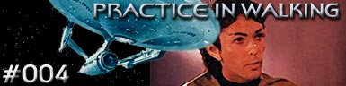

|

Escrito
por Richard Bach
A Enterprise encontra
uma nave de um só passageiro, uma mulher que está em animação
suspensa. Xon identifica a nave como sendo parte do projeto "Long
Chance", e que foi lançada da Terra em 17 de outubro de
2004. Investigando a nave, Scotty, juntamente com Decker e Sulu,
acidentalmente toca em um controle no painel e os três
tripulantes da Enterprise caem em um sono profundo.
Ao acordarem, sem memória, descobrem que estão na antiga Escócia.
Descobrem também que no passado ajudaram a mulher que estava
adormecida na nave encontrada, protegendo-a de habitantes que a
acusavam de bruxaria.
Enquanto isso, na Enterprise, McCoy percebe que os sinais vitais
de Decker, Sulu e Scotty estão enfraquecendo, e se eles não saírem
desse estado de sono profundo, acabarão morrendo. Cabe agora a
Kirk e a tripulação da Enterprise descobrir um meio de salvá-los.
Curiosidades
 O produtor
Harold Livingston disse na época que "Richard Bach foi uma
ótima aquisição para a Fase II, sua história pode
acabar como um dos melhores episódios já feitos até hoje".
Pena que ela nunca foi filmada... O produtor
Harold Livingston disse na época que "Richard Bach foi uma
ótima aquisição para a Fase II, sua história pode
acabar como um dos melhores episódios já feitos até hoje".
Pena que ela nunca foi filmada...
Richard Bach foi um dos grandes escritores dos anos 70, tendo lançado
um livro naquela década que tornou-se um super best-seller em
pouco tempo, "Jonathan Livingston Seagull". No Brasil o
título do livro foi adaptado para "Fernão Capelo
Gaivota".
(O TB
agradece à leitora Silvia Tasca pela colaboração)
Episódio
anterior | Próximo
episódio
|